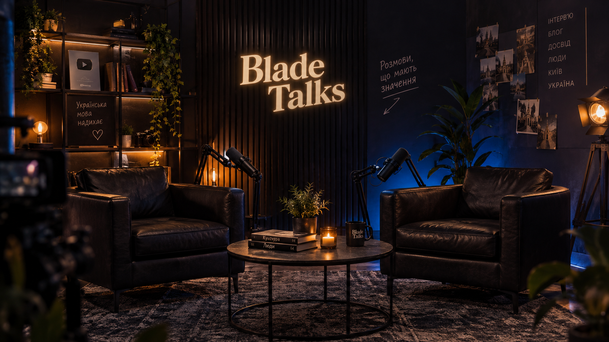
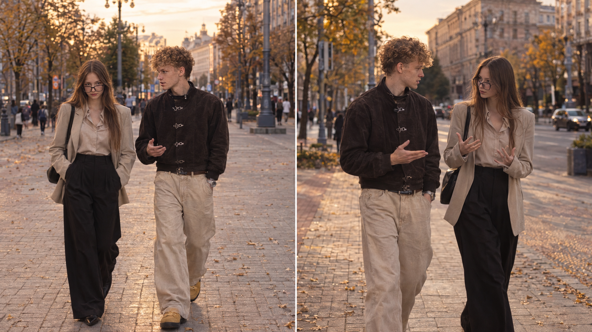
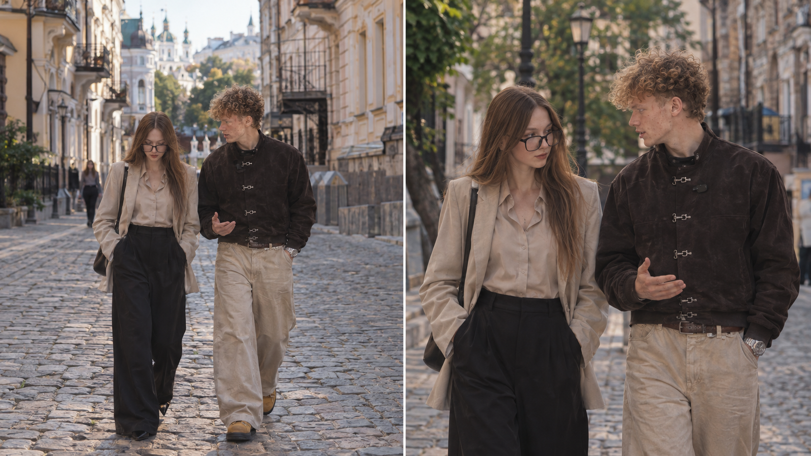
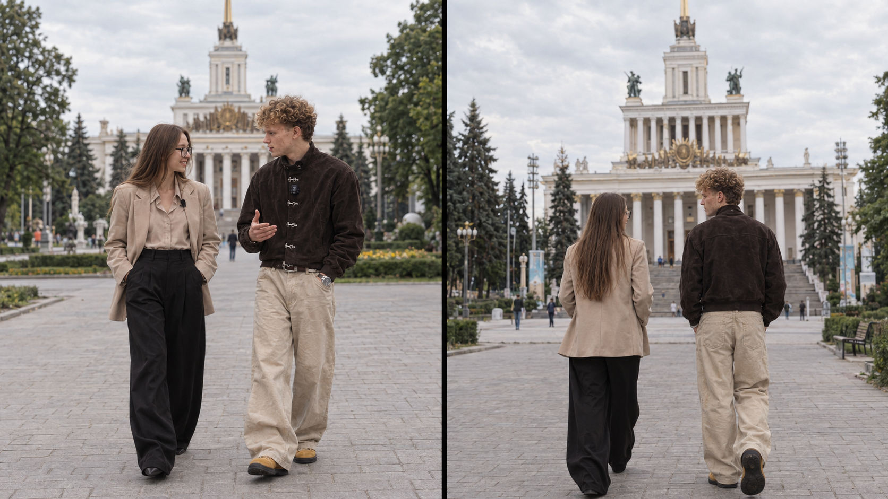
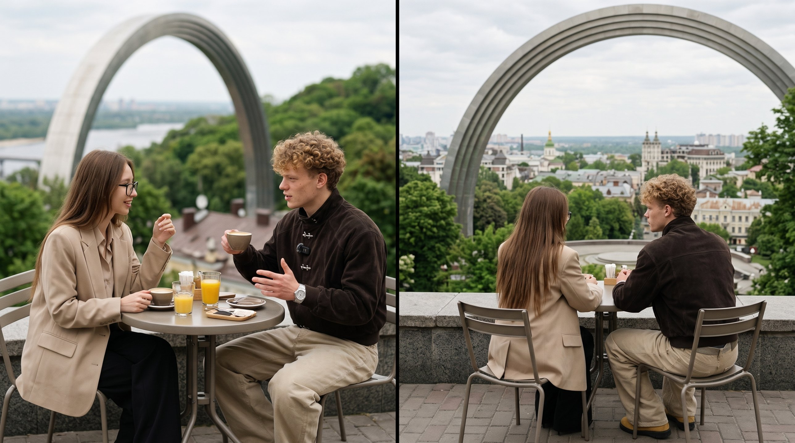

Сценарій
Питання короткі, відповіді живі. Речення складносурядні, але звучать як справжня розмова.
Часова капсула
2026
Натисніть, щоб увімкнути звук
Вероніка ДаниленкоАвторка каналу Блейд
Артем КачуровськийГість · 17 млн підписників
Відео
Дев'яносто секунд про шлях, помилки і слова, які змінюють усе.
Проєкт
Коротке інтерв'ю у форматі сучасного YouTube-шоу. Тут важлива кожна фраза і кожен кадр.
Питання короткі, відповіді живі. Речення складносурядні, але звучать як справжня розмова.
Студія з бурштиновим світлом, вечірній Київ і місця, де починалася історія.
Сценарій, образи, озвучка і монтаж зроблені вручну. Частину візуалу створено з допомогою штучного інтелекту.
«Слово за тобою» — це дев'яносто секунд живої розмови. За такий короткий час ми хотіли встигнути головне: познайомити глядача з гостем, поставити питання, які змушують задуматися, і показати місця, де починалася історія.
Розмова ведеться українською. Кожне речення ми писали так, щоб його було приємно слухати. Складносурядні конструкції дають розмові ритм, а короткі питання тримають увагу. Ми не хотіли читати текст із аркуша, тому репліки звучать як розмова двох людей, які добре знають одна одну.
Сцени ми зняли і створили в кількох локаціях Києва: від темної студії з бурштиновим світлом до алей ВДНХ і кафе з видом на місто. Кожна локація має свій настрій, і разом вони складають історію від першого слова до останнього кадру.
Локації
Студія, вечірній Київ і місця, які стали частиною розмови.

Темна студія, шкіряні крісла, розмови без поспіху.

Головна вулиця міста. Розмова на ходу, між осінніми деревами і старими фасадами.

Бруківка, старі фасади, історія Києва. Тут легко говорити про минуле.

Широкі алеї і величні павільйони для розмов про великі речі.

Кафе на пагорбі, де розмова повертає до сьогодення, а Київ лежить під ногами.

Золоті куполи над Дніпром. Місце, де тиша звучить голосніше за слова.
Команда
Двоє людей, одна розмова.
Авторка каналу Блейд
Співавторка проєкту й учасниця інтерв'ю. Стежить за ритмом розмови, підбирає питання і відповідає за те, щоб кожна репліка звучала живо.
Гість інтерв'ю
Понад 17 мільйонів підписників на YouTube. Говорить про шлях без глянцю і вміє розповісти історію так, щоб її хотілося дослухати.
Процес
Від першої ідеї до готового сайту ми пройшли кілька етапів. Кожен із них вимагав уваги до деталей.
Обговорили тему, написали питання і відповіді, перевірили таймінг, щоб усе вклалося в 90 секунд.
Продумали одяг, зачіски і деталі, щоб персонажі виглядали однаково в кожному кадрі.
Підібрали студію, вулиці Києва і шкільну локацію так, щоб вони виглядали як одна історія.
Озвучили репліки окремо, зібрали відео в CapCut, додали переходи, звук і субтитри.
Написали сторінку на HTML, CSS і JavaScript, оформили її в кольорах студії і розмістили на GitHub і Netlify.
Подяка
Щиро дякуємо Наталії Іванівні за цікаве завдання. Саме воно підштовхнуло нас до ідеї зробити не реферат, а живу розмову, яку можна переглянути, послухати і відчути.
Ми підійшли до роботи дуже серйозно. Цілий день без перерви ми обговорювали тексти, записували репліки, шукали локації і складали з усього цього відео. Результат нам самим дуже сподобався, і ми пишаємося тим, що зробили.
Частину візуалу ми створювали за допомогою штучного інтелекту. Сценарій, тексти, вибір місць, озвучку і монтаж ми зробили самі, і готові розповісти про кожен крок.